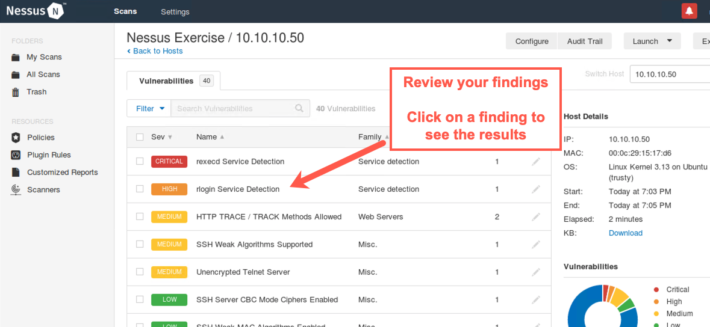

Lab 2.4: Nessus
Objectives
- To create a custom Nessus Scan Policy
- To analyze Nessus options for authenticated and unauthenticated scans
- To review Nessus plugins and features for calling third-party tools
- To create a new Nessus scan and use it to find vulnerabilities in the 560 target environment
- To interact with the Nessus reporting capabilities while a scan is underway
- To download a Nessus report in XML format
Table of Contents
Lab Setup
Ensure that you can ping 10.10.10.10 in the 560 target environment.
$ ping 10.10.10.10
Lab – Step-by-Step Instructions
1. Launching Nessus
First, we need to invoke the nessusd service:
$ sudo service nessusd start
You will not see any indication of "OK" in the output. Instead, when nessusd is ready, you will get your command prompt back. If you get an error saying that nessusd can't bind to the port, that is likely because you already have nessusd running, using that port. You can likely just connect to it if it is already running or kill it with the killall command and an argument of nessusd.
When the nessusd server is running, we can invoke the Nessus web-based interface by launching our browser. Open Firefox and browse to:
https://localhost:8834
Note the
httpsand the port number of8834.
You will now get an Alert message saying "Your connection is not secure" because the security certificate from the nessusd web server is not trusted by Firefox by default. We need to add a security exception.
On the warning page, click Advanced then scroll down.
Scroll down and then click Accept the Risk and Continue
The Nessus web-based GUI will ask for a Username and Password to access nessusd.
Type in a login name of root and a password of !nessuspw! and click the Sign In button.
Please note that you are typing in the name and password of the root user we created in Nessus, not the overall root user for the operating system. The operating system root password is different from this password within Nessus.
You can click "Remember Me" so you won't have to reauthenticate next time. When you see the Nessus splash screen showing "My Scans", you are ready to proceed.
2. Creating a Scan Policy
To explore Nessus, let's first look at how you can create a Scan Policy.
Click the Policies component near the left side of the GUI (under Resources).
Then, near the right side of the screen, click Create a new policy.
You now see the default policy templates distributed with Nessus, including Advanced Scan, Basic Network Scan, Credentialed Patch Audit, Web Application Tests, and much more.
Click Advanced Scan because that is what we'll use as our template to scan the target environment for this lab.
You should now see a box for entering the Name of the scan we want to create based on the Advanced Scan template.
Type Internal Network Scan inside that box. DO NOT click Save. We will do that later.
3. Configuring a Scan Policy
Next, we'll analyze and configure the details of that Internal Network Scan.
Let's look at the options Nessus provides for authenticated scans.
Click the word Credentials near the top of the Nessus screen.
Nessus allows testers to enter user IDs and passwords for a target environment, which Nessus uses with various plugins that can supply user credentials to target machines. Some of these plugins actually try to log in to various target systems and measure them for vulnerabilities. Credentialed scans (also referred to as authenticated scans) can provide greater detail about configuration flaws and other issues in a target environment than unauthenticated scans.
Most professional penetration testers and ethical hackers do not use these options, instead relying on Nessus scans for vulnerabilities that can be measured without any user credentials at all. Some pen testers and some auditors do use these options, however, to gain more in-depth insight into the security vulnerabilities of target machines that can be measured only using valid authentication credentials, especially for internal network scanning.
On the left side of the screen, we can see the Host credentials options, including the Simple Network Management Protocol v3 (SNMPv3), SSH, and Windows. Click the infinity symbol (∞) next to Windows. You should now see the screen on the right where we can enter a Windows username, a password, and a domain name.
We can also use the pull-down menu to indicate whether we have provided credentials in the form of a password, an LM hash, an NT hash (labeled NTLM), a Windows Kerberos ticket, or other. If we provide hashes, Nessus can perform authenticated scans by doing pass-the-hash to authenticate to targets using the hashes and not the passwords themselves, a topic we'll discuss in more detail in 560.4 and 560.5.
Because the scan we are conducting for this lab is unauthenticated, do not enter anything in these fields.
Next, on the left side of the screen, click the infinity symbol (∞) next to SSH. Here, we can configure Nessus with an SSH username and password as well as public and private keys for authenticating to machines in the target environment. Then click the dropdown with the word public key to see the other authentication options Nessus supports for ssh. In addition to logging in via SSH, Nessus has an option to provide a method for elevating privileges on a target environment using su, sudo, or other options.
Again, because the scan we are conducting for this lab is unauthenticated, do not enter anything in these fields.
Finally, click the two Xs on the right side of the screen, one on the Windows credentials tab and the other on the SSH credentials tab, to close them.
4. Plugins
Near the top of the Nessus screen, click Plugins. Then, on the left side of the screen, look at the "PLUGIN FAMILY" categories. You see categories such as Backdoors, Brute force attacks, and CGI abuses. Scroll down to see items such as Databases, Denial of Service, and DNS. Click the Denial of Service plugin family to reveal the individual plugins in this family.
Now, in the plugins pane on the right side of the screen, you can see the individual plugins inside the Denial of Service family. If you click one of the plugins here, you can see the details associated with it. Note that the detailed plugin screen includes a Synopsis, a Description, and a recommended solution along with references and a Plugin ID number. You can close the detailed plugin screen.
Note that by default, various plugins are marked as active. (The green box indicates that.) If you click a plugin's green box on the left, the plugin gets turned off, making it gray and saying Disabled. Try deselecting one of the plugins inside of the Denial of Service family (such as plugin # 10020) by clicking its green box. When this plugin is turned off, its box turns gray. What's more, you can see that the family box on the left now turns a striped blue and says MIXED, indicating that some plugins within this family are disabled. You can also disable or enable entire families by clicking the green box next to their name.
For this scan, make sure you leave the Denial of Service category as well as the various plugins in that category enabled. By default, Nessus turns off all dangerous plugins. These Denial of Service plugins are not dangerous, as most focus on checking version information without launching a denial-of-service attack.
5. Additional Nessus Settings
Now look at some additional Nessus settings.
Click Settings near the top of the Nessus screen.
Here you can configure some options that control various features of Nessus, not just individual plugins.
Click Assessment.
Then click Brute Force.
Here we have options for password guessing against target machines.
Now scroll down.
You can see that Nessus can call Hydra, a flexible password guessing tool that we'll look at in depth when we cover password guessing.
When you scroll down, you'll see the detailed Hydra configuration Nessus can use. We'll actually discuss many of these options in Hydra and use many of them in a password guessing lab then. Note that Hydra scanning is disabled in this Nessus Advanced Scan policy by default. Also, note that password guessing can be a slow process, indicated in the Nessus Hydra configuration with the word "(slow)".
At the top of the screenshot above, it says:
Nessus uses Hydra to attempt brute force attacks when either this setting or the "Perform thorough tests" setting in the "Assessment / General" section is enabled.
Next, still under the Assessment part of the screen on the left, click Windows.
Here you see how Nessus can enumerate domain or local users by iterating through the Security Identifiers (SIDs) of accounts.
Briefly review these options. The default settings for them are quite reasonable for most tests, so do not change them.
Now that we've reviewed the Scan Policy, let's save it so we can run a scan using it.
Near the top of the Nessus screen, click BASIC.
You should now see the Internal Network Scan name.
Click Save.

6. Launching the scan
Now that we have reviewed the configuration options, let's actually launch a scan using Nessus and our Internal Network Scan policy.
We'll move from the Policies configuration component of Nessus to its Scans component.
Click My Scans on the bar near the top left side.
We're going to add a new scan, so click Create a new scan.
We now get to choose a Scan Policy.
Click the words User Defined near the top of the screen so we can see the customized Scan Policy we created.
Click the Internal Network Scan policy we created.
Now we need to choose a name for the scan.
Type in Nessus Exercise.
We'll scan target IP address range 10.10.10.50-60.
Please enter 10.10.10.50-60 into the Targets field.

Now we need to launch our scan. Click on the down arrow next to the word Save near the bottom of the screen. You will see a dropdown menu with the word Launch. Finally, click on Launch.
You should see a screen that shows the Nessus Exercise scan, with rotating green arrows to indicate that the scan is underway.
The scan will begin to run. Click on your scan to get information about its progress.
You should now see the progress of your scan, as hosts and vulnerabilities are identified.
7. Watching the Traffic
While Nessus is running its scan, activate tcpdump in a separate terminal to sniff traffic going to and from the 10.10.10 network so that you can watch the Nessus activity:
$ sudo tcpdump -nn net 10.10.10
You'll see something similar to this:
$ sudo tcpdump -nn net 10.10.10 tcpdump: verbose output suppressed, use -v or -vv for full protocol decode listening on eth0, link-type EN10MB (Ethernet), capture size 262144 bytes 19:00:06.396178 IP 10.10.75.102.34881 > 10.10.10.50.161: GetNextRequest(28) .1.3.6.1.2.1.1.1.0 19:00:06.396521 IP 10.10.10.50 > 10.10.75.102: ICMP 10.10.10.50 udp port 161 unreachable, length 79 19:00:06.398571 IP 10.10.75.102.51152 > 10.10.10.50.161: GetNextRequest(28) .1.3.6.1.2.1.1.1.0 19:00:06.398920 IP 10.10.10.50 > 10.10.75.102: ICMP 10.10.10.50 udp port 161 unreachable, length 79 ... truncated for brevity ...
Initially, Nessus attempts to determine which IP addresses are actually in use by sending a series of probes to each address in the range we specified. After determining that 10.10.10.50 and 10.10.10.60 are live hosts, Nessus then focuses its scan on each of them. When it identifies live target hosts, you should see a screen like the one below, with tabs including Hosts and Vulnerabilities.
We can see interim counts of the number of discovered High, Medium, and Low issues identified so far in the scan next to the host IP addresses.
8. Real-Time Monitoring
Before the scan finishes, as it is running, in the Host tab, click the 10.10.10.50 or 10.10.10.60 host.
You now see the individual findings discovered so far for that host.

Click a High-risk or Critical finding.
Look at the details Nessus provides about the target machine. Nessus has determined that each host supports the rlogin service, which introduces security risks associated with cleartext authentication and other concerns.
9. Saving Results
Nessus allows us to download our findings in a variety of formats.
Near the top right of the screen, click the Export button. It'll drop down to show you the formats Nessus supports.
The default format understood by Nessus is .nessus (the first one on the list), which is based on XML. This format can be imported into a Metasploit database for further analysis, something we'll do later in this course. Other formats include HTML, PDF, CSV, and a Nessus DB format. The Nessus DB format is quite large and stores not only the findings but all information about the Nessus scan.
We recommend that you save the results immediately in .nessus format (called Nessus in the dropdown list), as it is the most widely used form of Nessus results.
Select Nessus, and when prompted to save the file, click Save File and then OK.
10. Wrapping Up
When you finish the lab, you can simply click root near the upper right side of the Nessus GUI. On the dropdown menu, select Sign Out. You can then close your browser.
Then you can shut down the Nessus daemon by running:
$ sudo service nessusd stop
Conclusion
In conclusion, for this lab, we looked at configuring Nessus and using it to launch a vulnerability scan. In particular, we created a custom Scan Policy and looked at several policy options for it, including authenticated versus unauthenticated scans, integration with the Hydra password guessing tool, and Windows user enumeration. We also reviewed plugin selection, as well as activating and deactivating plugins, in a Scan Policy. We then launched a scan and interacted with the interim results while the scan was under way.